완성된 작품뿐 아니라 작품으로 가는 과정, 읽고 쓰며 발견한 장면들, 새로운 소식들을 이곳에 남기려 합니다. 아래의 제목을 클릭하면 글의 내용을 확인할 수 있습니다.
Education
2023-26서울과학기술대학교 문예창작학과, 문학석사 취득
Programms
Personal Works
2018시집 『부탁해, 벌꿀』 출간
2000소설 『free end』 출간
Professional Works
Employment
2021–예스24 커뮤니티파트 프리랜서
Certificates
2001컴퓨터활용능력 2급 (대한상공회의소)
2000워드프로세서 1급 (대한상공회의소)
Skills & Tools
HWPExcel/VBAHTML/CSSScrivenerNotionGitHub PagesEndnoteObsidianAI Content ToolsPhotoshopSlackLovable
Last updated 2026.09.18.
Made with perplexity.ai
왼쪽 이메일 아이콘 또는 closedbook.lee@gmail.com 을 통해 연락하실 수 있습니다.
편집에서는 문장을 더하기보다, 덜어내는 일이 주가 됩니다. 이를 통해 글이 자기 리듬을 찾도록 만듭니다.
창작의 언어와 연구의 언어는 서로 다른 방향으로 향하는 듯하지만, 결국 질문에 대한 오랜 고민과 그를 통해 내놓는 대답이라는 점에서만큼은 서로 닮아 있습니다.
대화창 안에서 이야기를 전개할 때는 무엇보다 호흡이 중요합니다. 짧은 말 한마디가 장면 전체의 속도를 결정하기도 합니다.

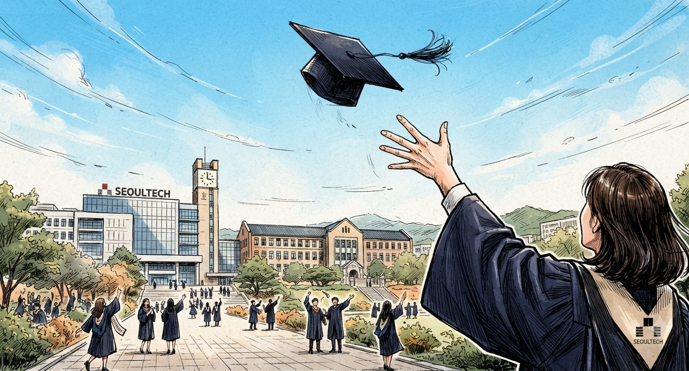
문학석사
서울과학기술대학교 문예창작학과 대학원에서 소설을 전공하였고, 소설 창작 및 문학 연구를 수행했습니다. 재학하는 동안 소설 4편을 완성하였고 911 테러, 인류세, 신유물론 등의 담론을 문학적, 학술적으로 탐구했습니다. 논문 지도 과정을 통해서는 논문 작성법, 문학 비평 이론을 익혔고, 창작과 연구를 오가며 이야기를 바라보는 시야를 넓혔습니다.
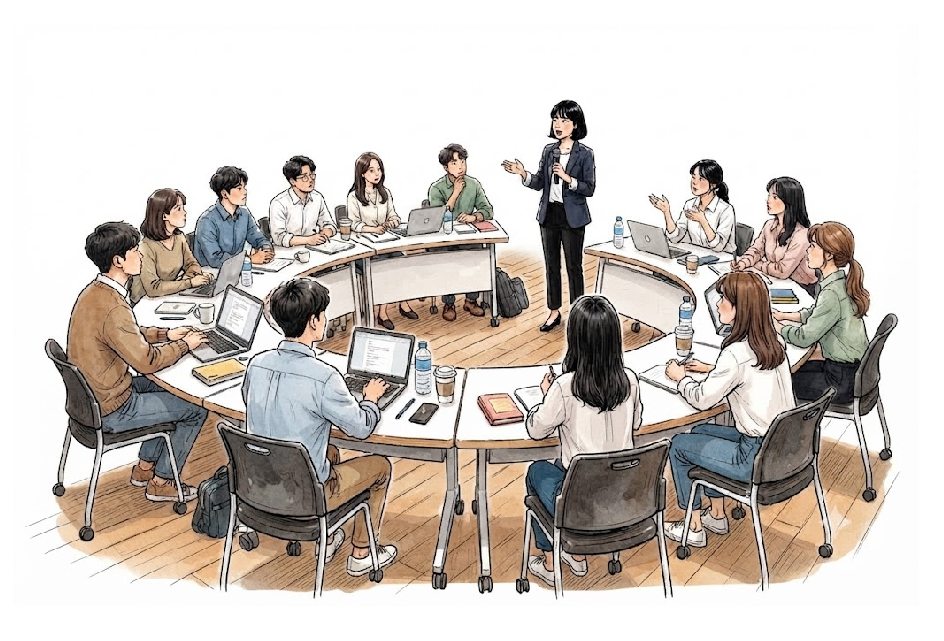
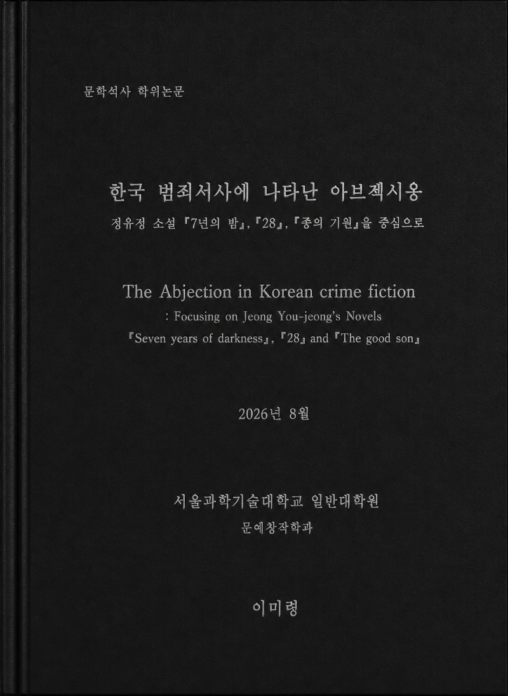
한국 범죄서사에 나타난 아브젝시옹: 정유정 소설 『7년의 밤』, 『28』, 『종의 기원』을 중심으로
‘악의 문제’를 창작자의 관점에서 탐구하고자 쓴 문학석사 학위논문입니다. 정유정의 소설 『7년의 밤』, 『28』, 『종의 기원』에 나타난 잔혹 행위를 줄리아 크리스테바의 ‘아브젝시옹’ 개념으로 분석했습니다. 논문 전문은 RISSRISS에서 확인하실 수 있습니다.
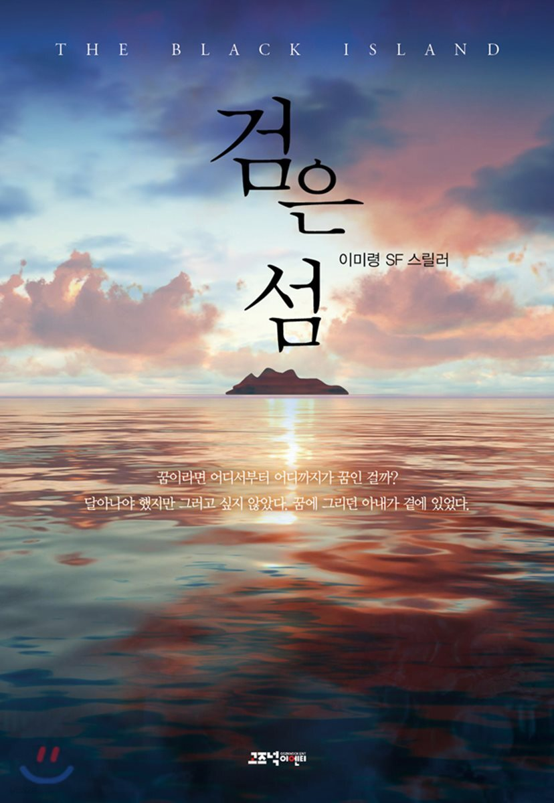
검은 섬
고즈넉이엔티에서 출간한 SF 스릴러 장르의 소설로, 경장편 분량입니다. 한국콘텐츠진흥원의 스토리 작가 데뷔 프로그램의 일환으로 창작지원을 받았고 그 결과 책을 출간했습니다.
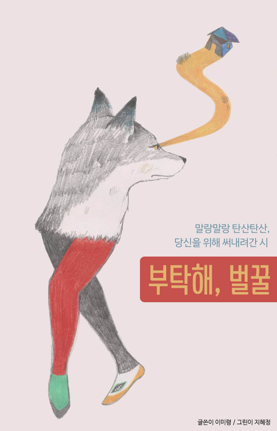
부탁해, 벌꿀
21편의 시가 수록되어 있으며, 온라인으로 공개한 시집입니다. 시집 『인어들은 영혼이 없다고 합니다 그래서 저의 꿈은 인어예요』에 수록되어 있던 시가 전부 포함되어 있습니다. 표지 그림은 일러스트레이터 지혜정 님께서 작업해주셨습니다. 현재는 판매가 중단되었습니다.
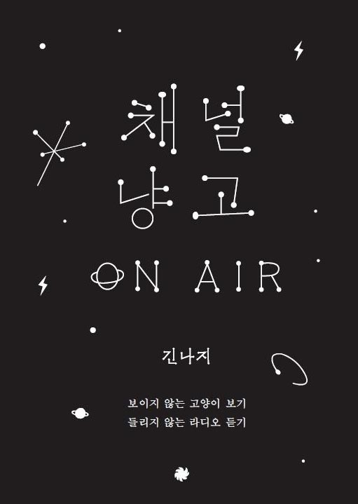
채널 냥고 ON AIR
고양이가 진행하는 라디오 방송의 대본 형식으로 웹사이트 <인비저블 캣>에 연재한 이야기를 묶어 만든 책입니다. 주 1회 연재하면서 모은 원고를 종이책으로 출간하였습니다. 이를 위해 1인 출판사 반얀과 함께 2인 출판 프로젝트 그룹 콜드스프링을 결성했습니다. 내지 삽화, 디자인, 편집은 모두 콜드스프링의 김상이 님께서 맡아주셨습니다. 이 책으로 제7회 언리미티드 에디션,KT&G 상상마당 독립출판물 전시 '상상박스전'에 참여하였습니다.
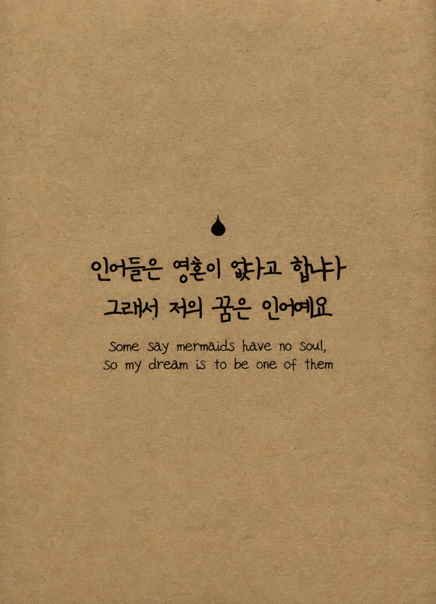
인어들은 영혼이 없다고 합니다 그래서 저의 꿈은 인어예요
한정 수량으로 핸드메이드 제작한 시집입니다. 종이는 크라프트로, 내지 제본은 퀼팅실로 처리하였습니다. 처음에는 제목이 『히피 만세』였다가 현재의 제목으로 수정한 바 있습니다. 부크크에서 전자책으로도 판매했으나 현재는 판매 중단되었습니다. 이 책으로 제7회 언리미티드 에디션과 KT&G 상상마당 독립출판물 전시 '상상박스전'에 참여하였습니다.
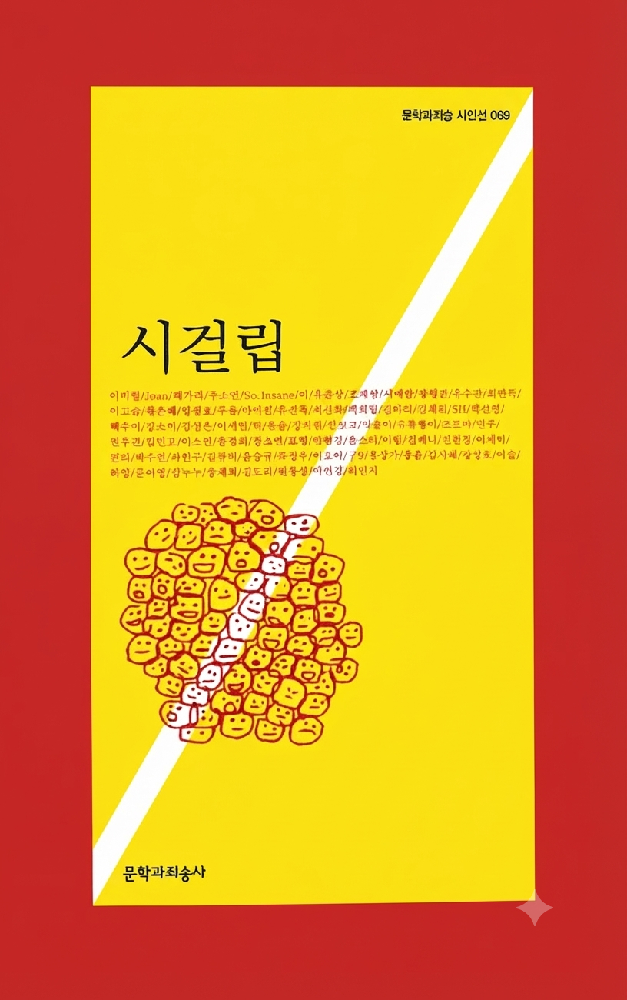
삼도천을 발송하다
『문학과죄송사 시인선 069: 시걸립』에 시 「삼도천을 발송하다」 를 수록하였습니다.
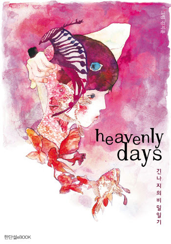
heavenly days: 긴나지의 비밀일기
한페이지단편소설을 통해 온라인으로 1개월간 연재한 일기를 PDF 파일로 묶어 배포하였습니다. ISBN도 남아 있습니다. 유달리 거칠고 재미있는 일들이 많았던 달이어서 일기를 쓰는 즐거움이 컸습니다. 현재는 파일이 유실되어 실제의 내용은 상상만 해볼 뿐이지만 그 해, 일기를 쓰던 추억이 여전히 소중하게 남아있습니다. 일러스트는 김지윤 작가님의 작품입니다.

픽셔너리, 탕!
한페이지단편소설을 통해 PDF 형식으로 제작하고 온라인으로 배포한, 첫 시집입니다. 안타깝게도 파일은 유실되었습니다만, ISBN은 아직 유효합니다. 이 과정은 저에게 독자를 만나는 기쁨을 누릴 수 있게 하였고, 시적 언어의 중요성을 체감하게 만들었습니다.
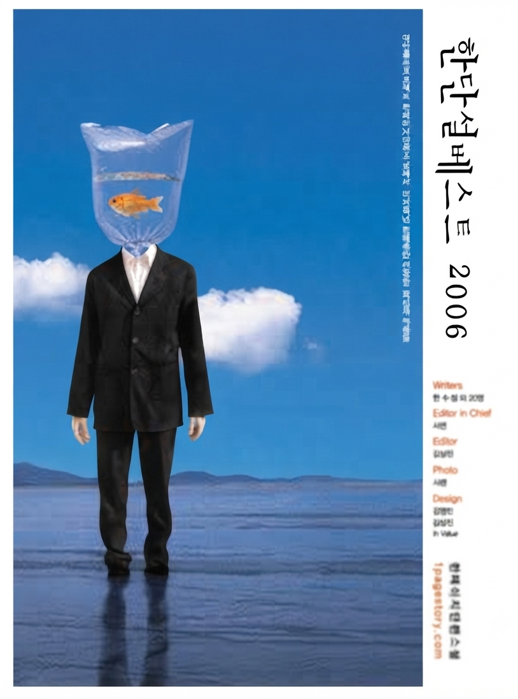
빗속에서 빛 속으로
한단설 베스트 게시판에 짧은 소설 「빗속에서 빛 속으로」가 22번째로 선정되었습니다. 이 소설은 한미화 님의 일러스트와 함께 온라인에 게시되었다가, 종이책 『한단설베스트 2006』로 제작되었습니다.
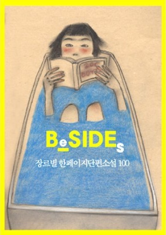
Kissing cousins: 끝은 없는 거야
『Besides: 장르별 한페이지단편소설 100』에 짧은 소설 「Kissing cousins: 끝은 없는 거야」를 수록하였습니다. 한 페이지 안에 인물의 관계와 감정의 온도를 모두 남기려 했습니다. 짧은 분량 속에서 문장 하나하나가 장면의 속도와 분위기를 좌우한다는 사실을 깨달았습니다. 이 경험은 이후 초단편 소설과 숏폼 각색에서도 ‘얼마나 강렬한 인상을 남길 것인가'에 주목하도록 만드는 계기가 되었습니다.
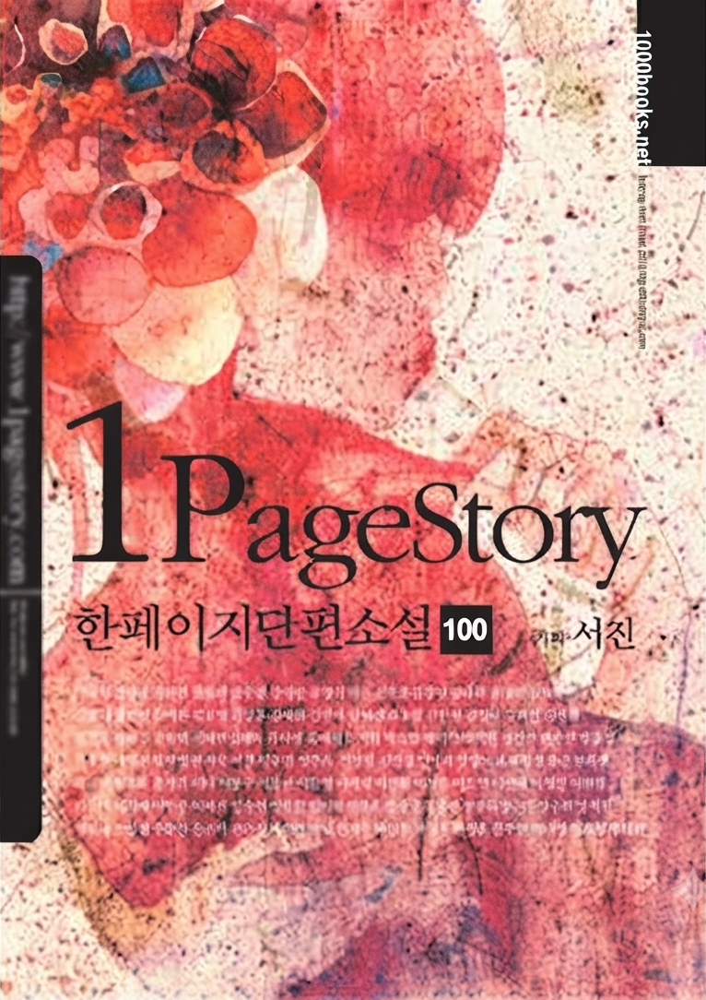
머메이드 코코
"누구나 소설을 쓸 수 있다"는 취지로 운영된 한페이지단편소설 프로젝트에 선정되었습니다. 총 100편의 짧은 소설이 실린 『한페이지단편소설 100』이 종이책으로 제작되었으며, 저는 「머메이드 코코」라는 제목의 작품을 53번째로 수록하였습니다.
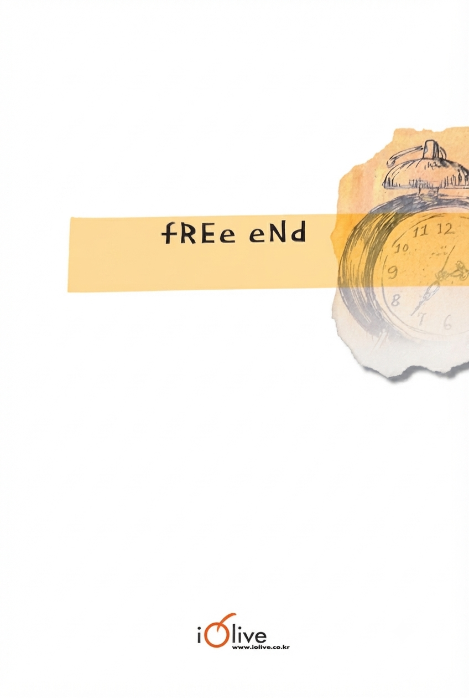
free end
중학교 3학년이 되던 해, 소중한 친구에게 선물하기 위하여 세상에서 한 권뿐인 소설을 썼습니다. 지금은 서비스 종료된 아이올리브를 통해 출간한 비매품입니다. 현재도 친구의 책장에는 이 책이 꽂혀 있습니다.
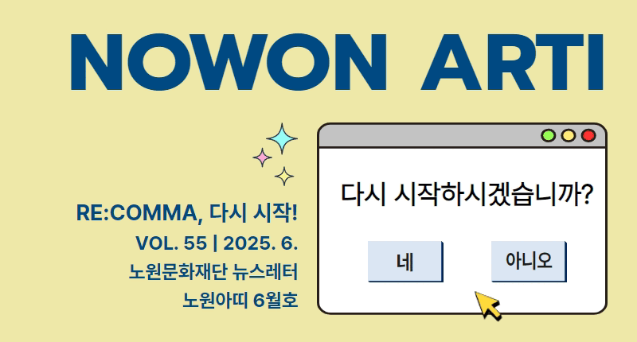
노원아띠
노원문화재단에서 제작하는 월간 웹진이자 뉴스레터 "노원아띠"에서 PM을 맡았습니다. 1년 프로젝트로서 2025년 2월~12월까지 기획, 기사 작성, 교정·교열·윤문, 편집, 디자인 전반을 담당하였습니다. 매호 발간 전에는 기자단과 더불어 기획회의를 거쳤으며 블로그 기사문 작성, 브랜딩, AI를 활용한 글쓰기 기법 등 기자로서의 실력 향상을 위한 워크숍 과정도 함께 이수하였습니다.
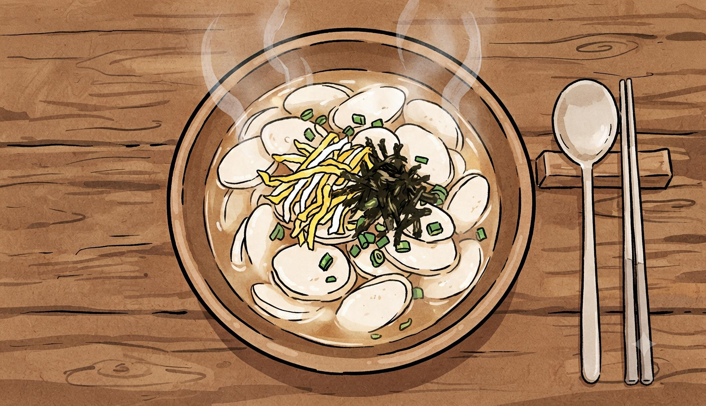
원미닛고 소설 및 숏폼
원미닛고 사이트를 통해서 공개한 짧은 소설 「내가 설날을 싫어하는 이유」가 2회 공모전의 추천작으로 선정되었습니다. 원미닛고에서 이를 각색하여 숏폼으로 제작하였습니다. 제한된 시간 안에 인물의 감정과 사건의 전개를 동시에 진행해야 했기에 문장의 순서와 리듬, 생략과 강조의 지점을 세밀하게 조정하는 방법을 익혔습니다.
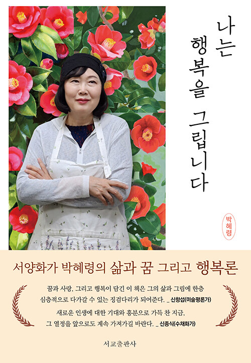
나는 행복을 그립니다
미술작가 장혜령의 작업과 인생 이야기를 담은 에세이의 교정·교열·윤문을 담당했습니다. 작가의 목소리를 해치지 않으면서도 문장의 흐름을 다듬고, 작업에 관한 설명이 독자에게 명확히 전달되도록 문장과 단락을 조정했습니다. 이 작업을 통해 타인의 글을 읽는 눈과 문장의 결을 맞추는 편집 역량을 키웠고, 이후 에세이와 인터뷰 기반 콘텐츠에서도 같은 방식을 적용했습니다.
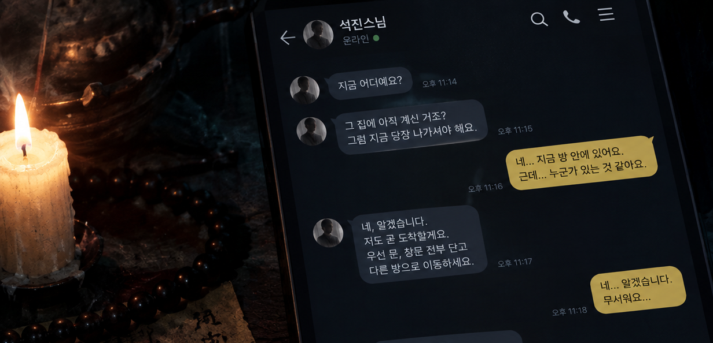
카카오톡 톡소설
카카오톡 형식의 소설 콘텐츠를 기획·집필했습니다. 「귀신, 제가 한 번 잡아보겠습니다」라는 제목의 호러 장르 작품으로, 전체를 대화창 형태로 구성했습니다. 채팅 화면의 제한된 공간에서 공포의 정점을 어떻게 전달할지 고민하며, 짧은 대사, 읽음 표시, 타이밍으로 긴장감을 높이는 방식을 실험했습니다.
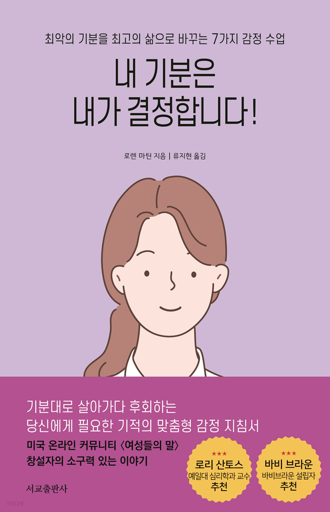
내 기분은 내가 결정합니다
『The Book of Moods: How I Learned to Decide How I Feel』은 미국의 여성 커뮤니티 "Words of Women"의 창립자이자 인플루언서인 로렌 마틴(Lauren Martin)의 에세이입니다. 저는 번역본 『내 기분은 내가 결정합니다』의 교정·교열·윤문 작업을 진행했습니다.
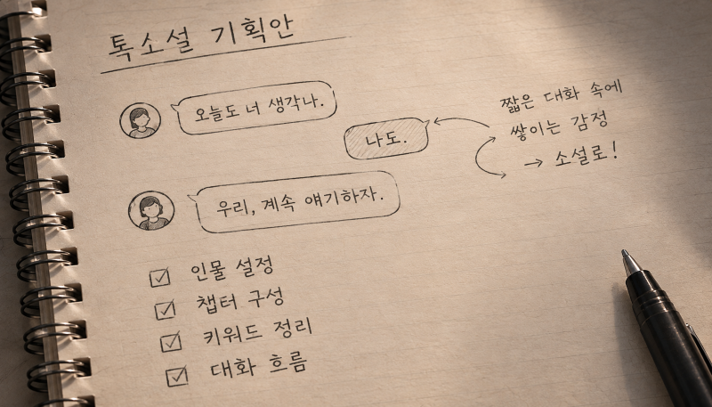
마인드로직 채팅 소설
채팅 기반의 소설 콘텐츠를 기획·집필했습니다. 대화창이라는 제한된 공간에서 인물의 성격과 사건의 흐름을 모두 전달해야 하는 과정에서, 짧은 말 한마디가 장면의 속도와 분위기를 결정한다는 사실을 체감했습니다. 이 작업을 통해 대화의 리듬을 설계하는 능력을 키우고, 행간으로 의미를 전달하는 서술 방식을 익혔습니다.
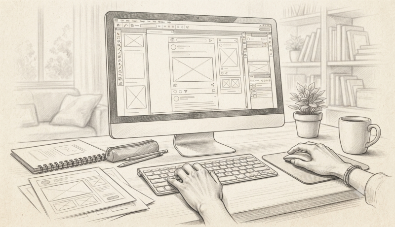
관악구청 SNS 카드뉴스
서울시 관악구청 서포터즈에 선정되어, SNS 카드뉴스를 제작하였습니다. 카드뉴스 한 장에 들어갈 핵심 메시지를 추리고, 문장과 레이아웃을 시각적으로 재구성하는 과정을 반복했습니다. 이를 통해 정보를 우선순위대로 정리하는 능력, 짧은 카피를 다듬는 능력, 이미지와 텍스트를 어우러지게 하는 기획 역량을 키웠습니다.
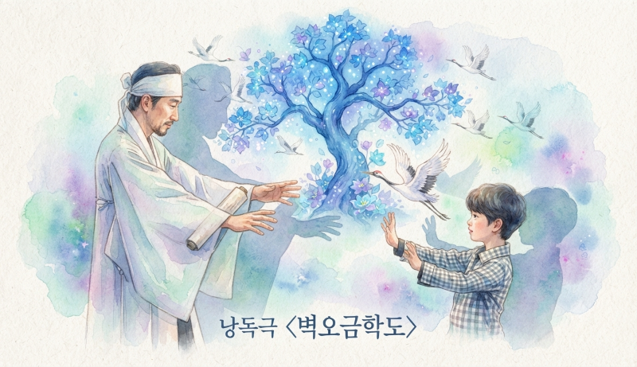
전시·행사·각색 작업
문화다방 이상한앨리스 주관, 이외수 소설가의 장편소설 『벽오금학도』를 낭독극으로 각색한 작업입니다. 이 작품은 2016년 12월 7~11일, 인천아트플랫폼에서 관객들과 만났습니다.
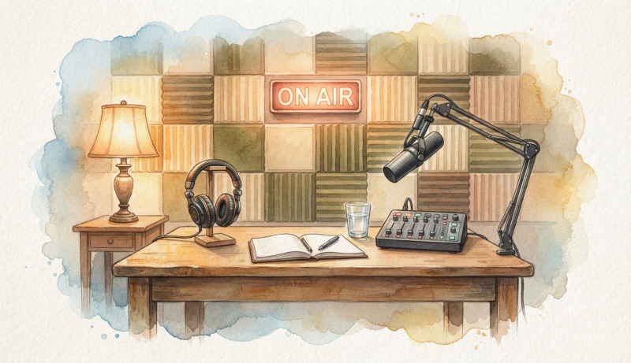
시가 들리는 순간
비정기적으로 한 편의 시를 집중적으로 낭독하고 감상을 나누는 팟캐스트 <시가 들리는 순간>을 기획·진행했습니다. 한 편의 시를 소개함으로써 시집을 읽고 시인을 만나는 계기를 제공하고, 청취자들과 좋아하는 시를 나누는 기쁨을 함께 나누고자 했습니다. 대본 작성과 녹음, 편집까지 전 과정을 담당하며 팟캐스트 제작의 전반적인 프로세스를 익혔습니다. 이 작업을 통해 오디오 매체에서의 원고 작성 능력, 콘텐츠 기획 및 제작 역량을 습득했습니다.
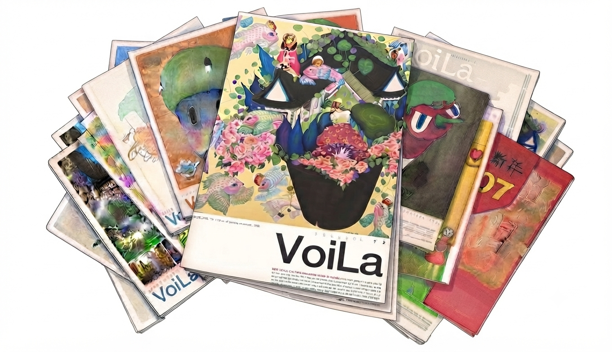
voila
부산시 문화잡지 객원 필진 활동입니다. 밴드 인터뷰 코너를 통해 자보 아일랜드, 불나방스타 소세지 클럽 등을 인터뷰하며 음악과 작업 과정, 밴드가 지향하는 방향을 묻고 정리했습니다. 사전에 꼼꼼히 준비한 질문지가 인터뷰의 결을 결정한다는 사실을 체감했습니다. 이 작업으로 인터뷰 기획력 및 편집 역량을 키울 수 있었습니다.
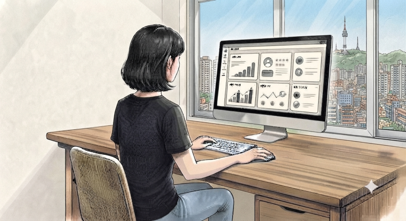
예스24 커뮤니티파트
예스24의 프리랜서로 재택 근무하고 있습니다. 평일 오전에 서평단 관리, 리뷰 모니터링, 기타 서비스 운영을 지원하고 있습니다. 이 과정에서 고객 응대 방식을 익혔고, VBA와 다양한 디지털 도구를 활용하는 역량을 키웠습니다.